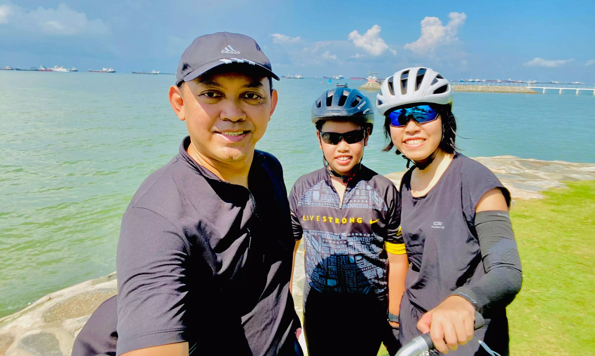
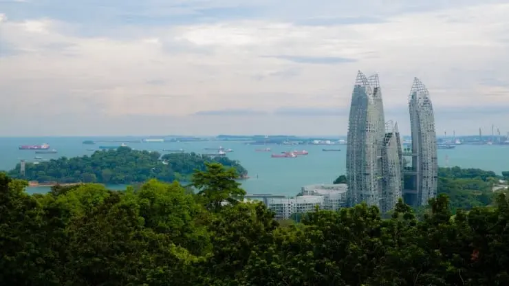
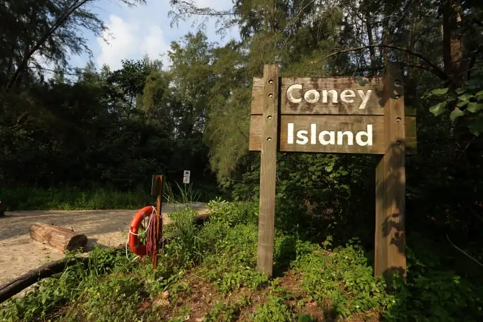
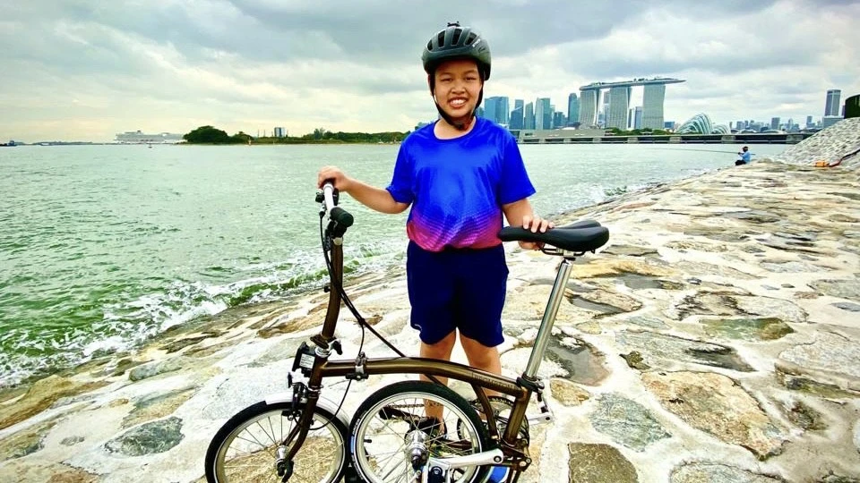

My Favourite Cycling Routes in Singapore

19 April 2022
Cycling is a great form of exercise for our body. Cycling in Singapore has really been picking up over the past few years! Want to know where to go to then? Read on to find out more about my favourite places to cycle at!
My Favourite Cycling Routes
- East Coast Park
- Jurassic Mile
- Mount Faber Loop
- St. John's & Lazarus Island
- Marina Bay loop
Bike Rental Services
Don't have a bike? Don't worry, we've got you covered with a list of Bike Rental Shops and App Based Rental Bikes!
- The Bicycle Hut
- Coastline Leisure
- Bikes at Waterway
- City Scoot Singapore
- Biking Singapore
- Sentosa Bicycle Rental
- GoCycling (Night Rental Available)
1. East Coast Park
With a distance of 15km, this is a perfect place for a family trip! For those who want a little more challenge can also take the popular Eastearn Coastal Loop to Pasir Ris Park.
- Difficulty level: Easy
- Distance: East Coast Park (15km)
- Address: East Coast Park Service Road
- Suitable for night cycling: Yes
These places are ranked by their factors which I think is most important:
Exciting, suitable for family cycling, good distance, not hard to complete
2. Jurassic Mile
Above is a video of my family at Jurassic Mile. Plan to visit this place? Get ready to travel way back in time to visit some dinosaurs during your adventure at Jurassic Mile!
Also, I have a blog post about it! You can visit it by clicking here
- Difficulty level: Easy
- Distance: Changi Airport Connector (3.5km)
- Address: Airport Blvd
- Suitable for night cycling: Yes
3. Mount Faber Loop
Don't let the short distance of this route fool you because you'll be in for one tough workout. After all, Mount Faber is home to Singapore's highest peak!
The elevation or steepness of the slopes up this climb is what makes this route so challenging, making it the perfect training spot for both beginners and experienced riders, with only their timings differentiating them.
- Difficulty level: Hard
- Distance: 3km
- Address: Mount Faber
- Suitable for night cycling: No
4. Coney Island
Located far in the north-eastern part of Punggol all you need is your trusted bicycle or a pair of legs to have an enjoyable ride through Coney Island! Although the main path of the island only runs for 2.4km, you can also explore the island’s coastal trails or chill at the hidden beach.
- Difficulty level: Easy
- Distance: Coney Island (2.4km)
- Suitable for night cycling: No
5. Marina Bay Loop
If you would like to catch the stunning view of Singapore's skyline, this is the route to take! The Marina Bay loop runs for 11km, starting at Marina Bay Sands, make your way across the helix Bridge and on towards the Esplanade and Merlion
- Difficulty level: Easy
- Distance: Marina Bay Loop (11km)
- Address: 10 Bayfront Ave, Singapore 018956
- Suitable for night cycling: Yes